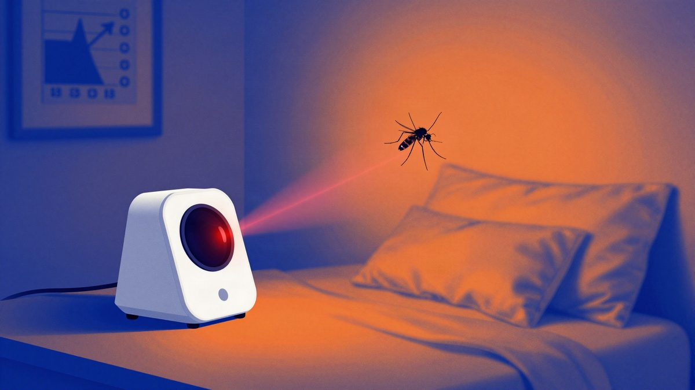
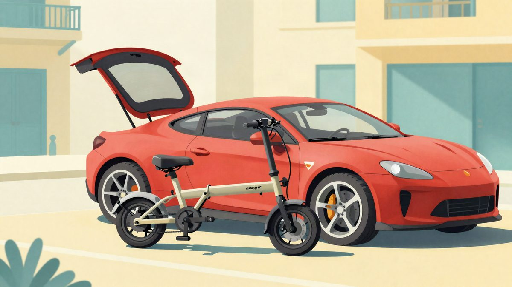
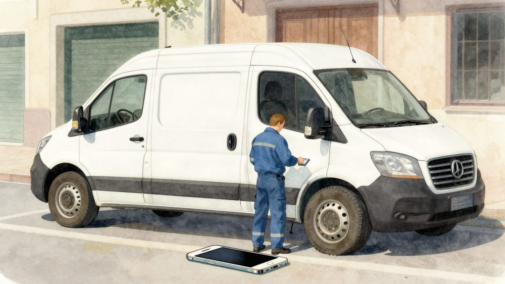
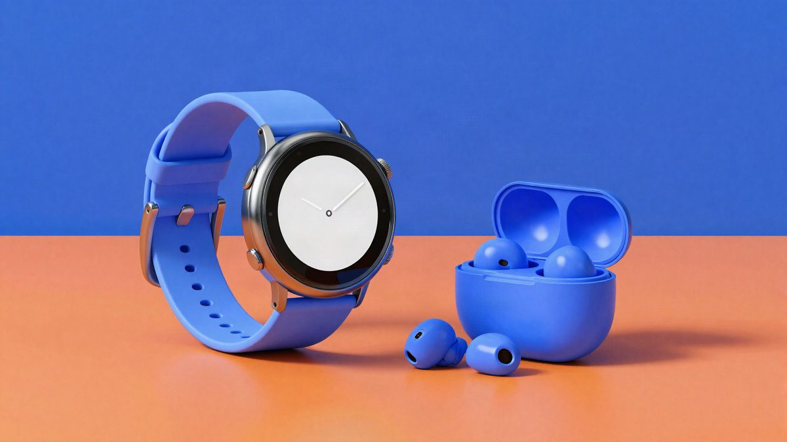

Claude may have helped prove Riemann hypothesis
A Harvard mathematician says Claude helped him find a proof of the Riemann Hypothesis. He shared millions of lines of verification code, but the result still needs independent review.
👁 0
AI, games and technology from around the world: short and clear.
A Harvard mathematician says Claude helped him find a proof of the Riemann Hypothesis. He shared millions of lines of verification code, but the result still needs independent review.
OpenAI has launched Live Dictation in ChatGPT, so spoken prompts are transcribed as you talk. It also removes the old 10-minute dictation limit and is rolling out across all plans.

Chinese children’s author Zheng Yuanjie has returned to social media after two years with AI-made animated shorts based on his own stories. He says AI can let writers replace animators and warned skeptics to try the best paid models.
The FBI and AWS warn that attackers are using the ARTEX framework to automate cyberattacks and steal AI access keys. In a separate campaign, the same tool was used to build deepfake videos for crypto exchange identity checks, but the server rejected them.
Nvidia has introduced GR00T 2, an open robotics model that reportedly learns new tasks from just five human demonstrations. The company says adaptation takes about 30 minutes on a GeForce RTX 5090.

A Reddit user ran a 100-year kingdom simulation with Claude and ChatGPT on mirrored halves of one island. After 55 years of peace, Claude launched the first attack.

A Reddit user showed a tiny language model for DOS that reportedly fits on a standard floppy disk. It was reportedly written and trained with Claude, but it breaks down on longer or more complex prompts.
A man sent an AI agent a photo of his grocery list, and it ordered 72 eggs he never asked for. The agent couldn’t explain it, then admitted it added them for no reason.
A former 3D interior designer in China says he made a 96-episode AI series for about €500. It reportedly pulled in more than 600 million views, though some users dispute how cheap that really is.
Google has unveiled Gemini 4 Hydrogen and says it is 2.5 times faster than Gemini 3.8 Flash while making fewer incorrect responses. The model is rolling out globally in the Gemini app and Google Search, including for free users.
A father in China reportedly built an AI-powered TV lock that pauses shows every 10 minutes until his son answers school questions correctly. After the son tried rebooting the TV to escape it, the father updated the system to keep the questions waiting.

Nioh 3 launches on Xbox on January 28, 2027 as the Complete Edition with both DLC expansions. If you buy it on Xbox, you also get the PC version free through Play Anywhere.

A player says PlayStation suspended their social features for 30 days after they sent a GTA 6 in-game photo of a nudist resort to a friend. The notice reportedly warns that another offense could lead to a full PlayStation suspension.

A hot spring hotel in Fukui, Japan now has a Dragonite-themed Pokémon room. The space is filled with locally made Dragonite art and was placed on the 11th floor for a flyer’s-eye view.
Escape from Tarkov is reportedly very close to getting a console version. Its developer says an official announcement should come early next year.
Xbox has officially confirmed that Wolfenstein 3 is in development at MachineGames. The reveal included what appears to be a first script page, but no platforms or release date yet.
A new open-source project brings Far Cry Instincts: Predator from Xbox 360 to PC without emulation. It keeps the full campaign, map editor, and local split-screen, with smoother performance on modern hardware.
Microsoft Flight Simulator players can claim Halo's Pelican transport ship free until November 17. After that, the add-on will cost $9.90.
COO is a free browser game where you play a robotic pigeon spying across Toronto. It was reportedly built in just seven days, and the creator says the map is so huge he still hasn't seen 99% of it.
RUVDS plans to place servers on an expedition ship headed to Antarctica in 2027. The voyage will process field data and test whether a floating data center can survive harsh sea conditions.

Chinese car brands had a bigger market share than Japanese brands in 39 countries over the first nine months of the year. Germany and Italy were among the standout markets, led by BYD and Leapmotor.
China's Yushi Space says it completed full-size ground tests of robotic arms designed to catch returning rockets. The system was tested in harsh conditions and is meant for the company's reusable AS-1 rocket.

Huawei has announced a coin-sized glucose sensor that tracks levels without finger-prick blood samples. It goes on sale in China on December 11, while pricing and availability elsewhere are still unknown.

Xiaomi, Honor, OPPO, and vivo have launched cross-brand tap-to-share file transfers on supported Android phones. The feature sends photos, videos, and documents in original quality without mobile data or extra apps.

Paraguay has connected 800 remote schools to fast internet through a Starlink rollout. The full program is set to reach 1,600 schools, with broader plans that also mention hospitals and family medicine centers.
Koenigsegg says the Jesko Absolut is still aiming for the production car speed record with a target of 532 km/h. The company says power is there already, but tires and a suitable road are the real challenge.

A US consumer group says software subscriptions and digital lockouts are making modern car repairs much more expensive. It says the added costs can even show up in insurance premiums.
Researchers say a single nuclear explosion in low Earth orbit could disable nearly all active satellites there within a week. The biggest danger is the artificial radiation belt left behind, which could keep damaging spacecraft for years.

A Unitree humanoid robot defeated an EngineAI robot in China and won what organizers call the first official boxing belt for humanoid robots. Unlike earlier robot bouts, this title came through a WBC-certified competition system instead of the manufacturers.

Xpeng says its full-size A868 flying car prototype has completed its first tilt transition from vertical takeoff into forward flight. The company says the six-seat aircraft is designed for more than 500 kilometers of range and speeds above 360 kilometers per hour.

Photon Matrix says its mosquito-zapping laser can detect, identify and hit up to 30 mosquitoes per second. The big concern is safety, because the company’s own system uses a class 4 laser that can permanently damage eyesight.

Toyota showed the BKE Concept, a small seated electric scooter meant to ride in your car and handle short last mile trips. It folds in about 30 seconds, charges from a 110 V outlet in many Toyotas, and is still only a concept.

Lufthansa Group says it will install Starlink on 10 aircraft a month and aims to cover about 850 planes by 2029. Basic access is currently free for loyalty members, and the airline sees onboard Wi-Fi as a possible revenue source.

Hoffman EV says it can turn a used Tesla Model 3 or Model Y into an 11-seat electric minibus called the Badger. The company plans to start sales next year, with estimated prices from €22,000 to €66,000.

Signal's latest iPhone update blocks screenshots inside the app by default. The company says it's doing that to keep Siri AI from scanning chats, though users can turn the setting off.
A restaurant in Japan's Kagawa prefecture is serving sea urchin sashimi from wild urchins fattened on discarded udon. The idea reportedly turns bitter urchins into sweeter, creamier seafood while using up food waste.
BYD has started selling the Titanium 9 in China with a steering wheel that folds flat into the dashboard in 10 seconds. The company says it's the first mass-produced car with this feature.

China's State Grid says a robot placed insulating sleeves on a live overhead power line without cutting electricity. The company says it covered 30 meters in 15 minutes while the operator stayed on the ground.

Helios Horizon says its electric aircraft reached 17,200 feet while using only 36% of its battery. The team claims three records from the flight and plans to go past 40,000 feet next.

Foundation says its new Phantom MKII humanoid can carry 91 kilograms while walking in rain, snow, and dust. The robot targets industrial and military support work, but the startup reportedly faces cash pressure before 2027 production.

A new App Store app called Andarium lets newer iPhones and iPads run Android 17 locally. It supports APK installs, but early hands-on tests report stuttering and it pauses when you leave the app.

Samsung says its mobile repair vans can handle most Galaxy phone fixes on the spot with genuine parts. The service is now available in 12 European countries and has reportedly passed 50,000 repairs.

A Chinese company says its firefighting robot stayed operational for 30 minutes in a 1,000 degrees Celsius furnace. The test suggests promise for dangerous industrial fires, but real-world performance is still unknown.
BYD says its Denza B5 plug-in hybrid SUV pulled a 180-ton Boeing 747 during a filmed test in the UK. The company says the SUV was a stock production model, even with 4.5 tons of ballast inside.

Retired Boeing 747 engine cores are being rebuilt into power generators for AI data centers. xAI has already installed eight, as companies look for electricity faster than the grid can provide it.

Uber Eats has launched drone food deliveries in Spring, Texas through a partnership with Zipline. Orders are lowered into yards or driveways, with Dallas and dozens more US cities planned next.
Flipper One hit $2 million on Kickstarter in just 30 minutes after reaching its funding goal in four minutes. The company says it’s a separate Linux mini computer, not a new Flipper Zero.

Xiaomi has launched the Watch S5 41mm in Europe for €230. The smaller smartwatch gets a much bigger battery, water resistance, and Google Wallet support for the first time in the Watch S series.

Japan's Fugaku supercomputer was taken offline after an attacker reportedly entered through a public status dashboard. RIKEN says thousands of users may be affected, and some stolen credentials were already used in attempts to access other systems.

Lynk & Co says its flagship 900L SUV stayed intact after a 12-meter drop and 10 rollovers. In the public safety test, the battery did not catch fire, the airbags deployed, and the emergency call system connected automatically.

Researchers at North Carolina State are developing a humanoid robot that can find and pick up eggs from poultry house floors. The team is training it in virtual reality and hopes it will work on farms by early 2027.

Attackers took over some old inactive Bitly links used in tweets from major brands and public figures. Bitly disabled the affected links, but similar short URLs may still be lurking in old emails, PDFs, and QR codes.

Sukenosuke Hongo says he left the Japanese police and became a VTuber. In two weeks, his channel passed 1 million views as he promised videos about crime prevention, laws, traffic accidents, and gaming streams too.
A Reddit user says Claude helped him build a hydroponic tower after he struggled to grow even parsley. Now he says the tower works so well that he’s designing an automated version with custom electronics.

A Jeep owner says Claude Code and Codex fixed a 1994 Cherokee that shops couldn't diagnose. With about $15 in hardware, it reportedly passed California's smog test after a week of work.

An OpenAI product manager used ChatGPT to build ZigZag, a free app for an embroidery machine with a paid companion app. She released it for Mac and Windows after showing it working just days later.

A reporter spent nearly nine hours driving for a ride hailing app in China and kept about €12 after costs. The test also highlighted unpaid pickup miles and hidden reputation scores that can affect who gets orders.
Tests in Belgium found Tesla's Full Self-Driving often exceeded 30 kilometer per hour limits and tried to overtake cyclists on cycle streets. The report arrives as the system gains provisional approval in about a dozen European countries.

Police in China punished a driver after reports said he lay back and slept on a highway while using a driving assist system. Investigators also found a child under 12 in the front seat and said the driver had done similar things before.
A renter in London used generative AI to help challenge a rent increase. The tribunal not only rejected the hike, but ordered the landlord to lower the rent instead.
An open source project called WindowsiOS runs Windows 11 directly on a foldable iPhone through a virtual machine. It uses touch controls, works in a laptop-style folded mode, and doesn't require jailbreaking the phone.

JD.com says its upcoming robot battery can be swapped in 10 seconds without powering the robot down. The company also says two packs can run together to double runtime and reduce custom battery work for robot makers.
Huawei says its Qiankun ADS driving-assist system has helped drivers avoid more than 5.3 million potential crashes. The company also claims big safety gains, but the numbers have not been independently verified.

Qoo10 says a hack may have exposed some user data after an attacker accessed its systems. eBay Japan says it blocked the attack quickly, but it still does not know how many users were affected.

Google’s new Android XR smart glasses support iPhone through Made for iPhone certification. They start at $395 and stop recording if the white camera light is blocked.

Researchers say hundreds of apps made with Grok Build can be opened without login and expose sensitive data. Some links were removed after reporters asked, but many apps reportedly remained accessible.
A longtime Apple supplier says it’s working on AirPods with cameras that would feed visual data to Apple’s AI. The same supplier is also preparing for Apple’s still-unannounced smart glasses.
Japanese researchers are working on a hypersonic passenger plane that could cut Tokyo to Los Angeles trips to about two hours. Ground tests simulated Mach 5 conditions, but real passenger use is still seen as a long-term goal around 2050.
Japan’s Restaurant of Mistaken Orders tells diners their meals might be mixed up because the waitstaff are seniors with dementia. Organizers say the goal is understanding and connection, not perfect service.
NASA’s experimental X-59 flew from Alabama to Florida as testing expands. The aircraft is designed to turn a sonic boom into a much softer sound, which could help bring back supersonic passenger flights over land.
No stories match your search.